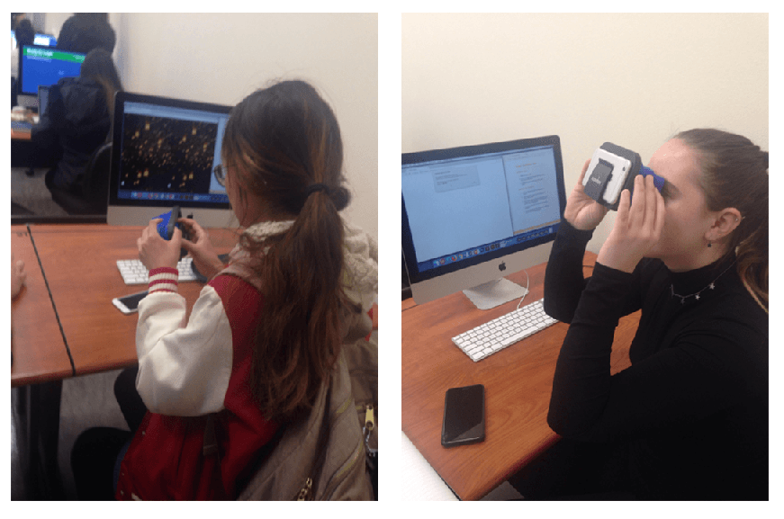

Target Audience Test Results
Description
For my audience test, I was able to have two users, Iris and Samantha. Both users came from different backgrounds and had different initial reactions to my project. Their reactions and answers to my test allowed me to consider my project from various perspectives and helped me further improve the interactivity of my project. I thought the experience was really valuable because I have never had direct conversations with a target audience before and it helped me see from the perspective of the user. Initially, it was difficult to explain my project without speaking to the users, but both users expressed that my project was different than others and that the interactions were a compelling way to look at the web.
User 1: Iris
For my first round of testing, I had Iris, who had never had any experience with VR. Because of this, it was difficult to communicate how to use the web site with her nonverbally. Additionally, I had my instructions as an alert on the website, so she quickly closed it instead of reading it. After asking her for her insights and suggestions, Iris suggested that the website needed step-by-step instructions on how to utilize the VR viewers and suggested a diagram. She also said that she felt the web page was similar to a game and she appreciated the natural tendencies to look around the virtual space. And while it was something that I did not initially consider, she suggested that the app was difficult to use if you needed glasses. (In my defense, there is nothing I can do about that, as that is the design limitation of VR viewers.) Iris said that she liked the VR project, but wanted more interactions to explain the project more fully. She also suggested that the question mark did not match the room's elegance and suggested using a different selectable object.
User 2: Samantha
My second user tester was Samantha, who also did not have any experience with VR. Like Iris, Samantha also closed the alert box with the instructions instead of reading them, but she did end up refreshing the page after she looked around the room on desktop view. Samantha mentioned that the selectable object was a little glitchy, so it was difficult to fully read the description of the project. Like Iris, she also suggested more interactions to explain the project, like placards in a museum. Samantha also suggested utilizing animations to show the user that they are entering a virtual reality space by opening a door and entering into the VR space (but I do not know how to code that). Overall, Samantha said that she liked my project concept, but wished that there was more to explain it within the project.
Further Changes & Improvements
Ultimately, I learned a lot about how a user without any experience in VR and without any context for my project uses my app. With this feedback, I plan on writing a longer alert so that the user will me more inclined to look at the alert before closing it. I will also add more interactions by adding more selectable objects. Taking Iris's suggestions, I plan on changing my object to a lantern to match my background. Taking Samantha's suggestions, I will add more descriptions and information about the project, artwork, and artist.